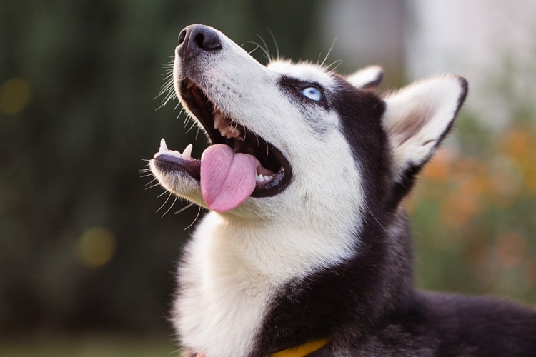
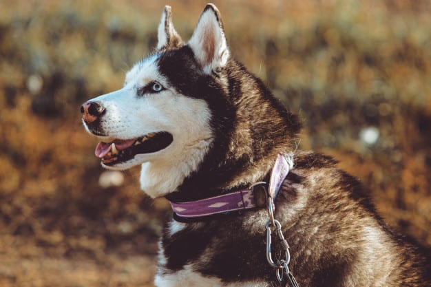
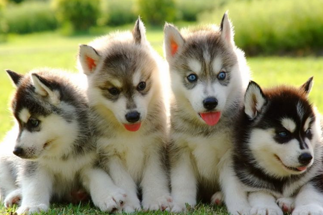

CUIDADOS
Dicas para cuidar de um husky siberiano

Ele precisa de amplos exercícios todos os dias, seja em longas corridas ou longos passeios sem coleira em área segura. Ele também adora puxar e gosta de tempo frio. Seu pelo precisa ser escovado uma a duas vezes por semana. Todos os dias, durante as trocas de pelo.

Por ser um cão ativo e bem energético, o tutor precisa ter uma rotina adequada para suprir as necessidades do Husky Siberiano. O enriquecimento ambiental com brinquedos é uma boa opção, mas é importante que o material dos brinquedos seja bem resistente para não ser destruído ou estragar facilmente, já que o cachorro Husky muitas vezes não têm noção da própria força. Além disso, passeios frequentes são necessários, especialmente no caso de quem não tem um quintal ou espaço apropriado para o Husky gastar energia.
CUIDADOS ESPECIFICOS
- Dentes: os problemas com tártaro atingem quase todas as raças de cachorro e Husky não fica de fora. Por isso, é essencial que o tutor esteja atento à saúde bucal do animal de estimação. A escovação dos dentes deve ser feita periodicamente. Dessa forma, além do tártaro, outras doenças que afetam a boca do cãozinho podem ser evitadas.
- Unhas: a unha desses doguinhos precisa ser aparada com frequência, já que o crescimento pode prejudicar a locomoção e o bem-estar do bichinho. Por conta disso, se você ainda não sabe como cortar unha de cachorro em casa, vale a pena procurar um profissional especializado para fazer o serviço.
- Banhos: Esse cachorro possui uma higiene de dar inveja. Ele faz sua limpeza de forma independente, dispensando totalmente os banhos de cachorro convencionais. Entretanto, se o seu animal de estimação se sujar muito em alguma brincadeira ou entrar na água, por exemplo, o banho é necessário. Você apenas deve se certificar que os produtos usados sejam específicos para pets, principalmente no caso do filhote Siberiano.
- Alimentação Deve-se alimentar o cão de duas a três vezes por dia e manter água à vontade. Cães de grande porte consomem rações large breed. Até os doze meses, o Husky Siberiano é considerado filhote. Nesta fase, a quantidade de ração varia de 95 a 355 gramas por dia.
